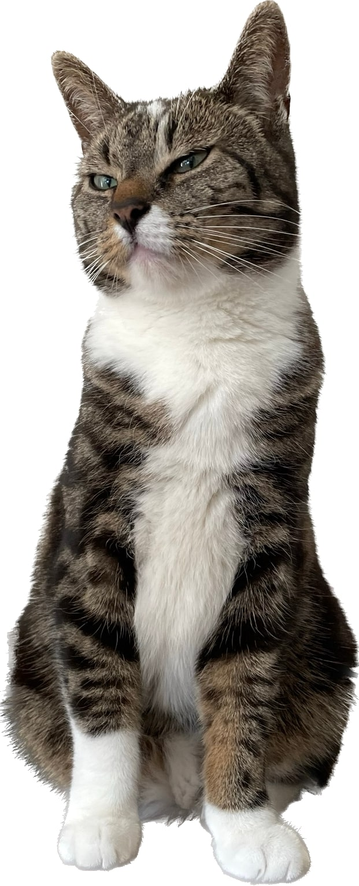

Vermiste kat in Kattenbroek
Ik wil helpen. Wat kan ik doen?
- Check je achtertuin, schuur en voortuin
- Kijk onder uw auto en die van de buren
- Aurora zit ook graag op hoge plekken
- Vertel over onze zoekactie aan je buren en vrienden
- Deel deze website

Kenmerken
- Cyperse kater van 5 jaar
- Witte nek, borst, buik
- Alle vier poten een witte sok
Details
- Links op zijn snuit (rechts voor u) heeft hij meer wit op de snuit dan rechts
- Zijn rechtervoorpoot (links voor u) is zijn witte sok langer dan links
Gedrag
- Aurora luistert niet naar zijn naam
- Hij kan flink schreeuwen (maar doet dit helaas niet als hij bang is)
Aurora's laatst bekende locatie
Het Hallehuis 67 (Kattenbroek), Amersfoort